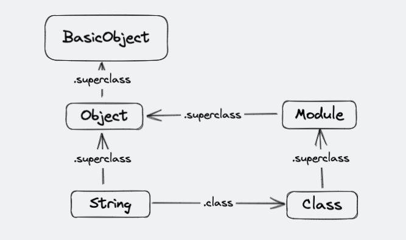
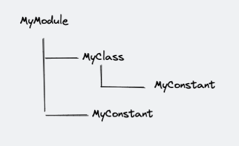
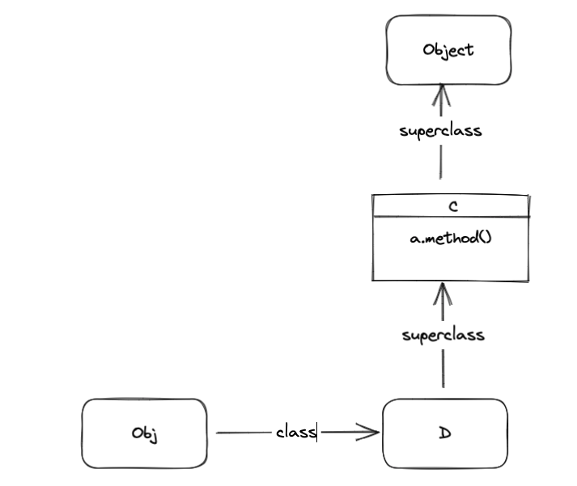
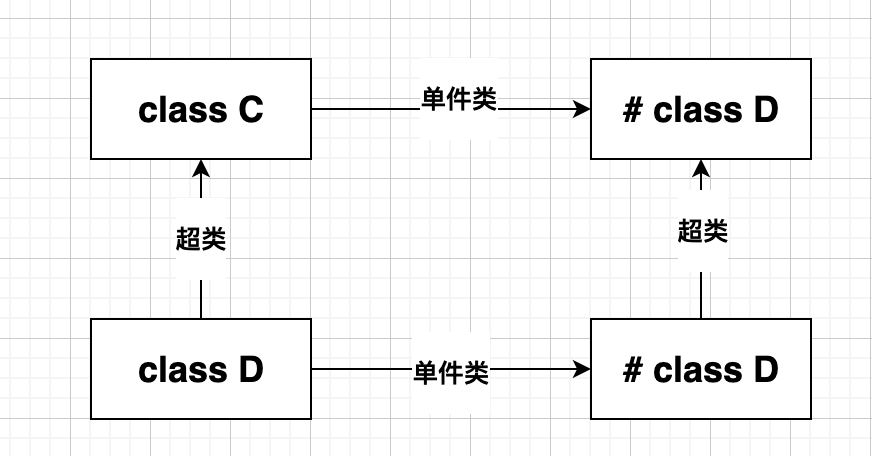
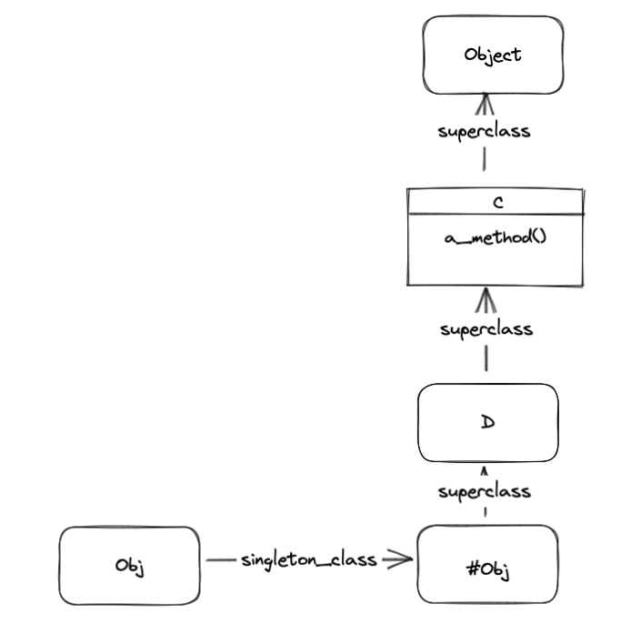

Ruby元编程
本文需要在了解Ruby基本语法的前提下，进行学习
元编程是什么？
元编程是编写能在运行时操作语言构件的代码
在我们使用编辑器编写代码后，代码按照我们所写的内容进行编译，运行。在启动后我们无权再对代码进行干涉，而在一些业务场景中，我们想在不修改源代码的前提下，对一个类进行增强，这在Java中也是一个成熟的技术，例如反射，动态代理。但是Java所能给予的操作相比Ruby，就显得格外的严格且复杂。
Ruby是一门可以在运行时操作语言构建的工具。语言构建就是我们代码中的各个成员（对象，类，模块儿，实例变量等）。通俗来说可以使用Ruby在运行时对已有的类进行灵活的修改，例如修改一个方法的定义。实例变量的定义，甚至我们可以在运行时创建一个没有的类。下面我们使用一些伪代码来进行演示。
我们想对数据库进行操作，最初我们的想法就是写一个Entity基类，然后由子类继承
class Entity
# 提供访问器
attr_accessor :table,:id
def initialize table,id
@table = table
@id = id
Database.sql "insert into #{@able} 'id' values #{@id}}"
end
def set(col,val)
Database.sql "update #{@table} set #{col} = #{val} where id = #{@id}"
end
def get(col)
Database.sql "select #{col} from #{@table} where id = #{@id}"
end
end
class Movie < Entity
def initialize id
super 'movies',id
end
def title
get "title"
end
def title= value
set "title",value
end
def article
get "article"
end
def article= value
set "article",value
end
end
# --------------------------------
# 插入一条数据，简单且方便
movie = Movie.new(1)
movie.title = "猫捉老鼠"
movie.article = "相当不错" 上面的代码看起来是可以解决问题，但如果一张表的字段特别多，我都需要定义到Movie类中吗？能不能用更少的代码解决问题？我们使用Active Record类库操作：
class Movie < ActiveRecord::Base
end
# --------------------------------
# 插入一条数据，简单且方便
movie = Movie.new(1)
movie.title = "猫捉老鼠"
movie.article = "相当不错" 我们看到这次在Movie继承ActiveRecord::Base后，没有指定是哪个数据表，没有写SQL，没有定义像上面一样的操作方法，我们就可以轻松插入数据。这底层到底是干了什么？
实际上是ActiveRecord在运行期，通过内省机制查看类的名字，通过Movies推断出表名为movies,并在在读取数据表时，发现有title,article两个字段，动态的定义了两个同名的属性和相应的访问器。也是就动态的生成了 Movie#title 和 Movie#title= 这样的方法。
这就是Ruby的特点，也是我们要学习的元编程的一种表现形式，我们后面将试着分析和学习它。
对象模型
现在我们有一个需求，将给定的字符串，添加一个后缀，我们可以定义一个函数
def appendTxt(content)
content = content + ".txt"
end
p appendTxt "alibaba" # => "alibaba.txt" 但这不填符合我们面向对象的方法，应该将这个函数封装到一个具体类中，定义它的职责。如果我们因此封装一个ApendTxtString类，会不会导致类太多了，能不能让原本Ruby中的String具有新的行为,答案是可以的。我们可以直接修改Ruby原先定义的标准类。
# 这里相当于从新打开String的上下文，添加一个新的方法
class String
def appendTxt
to_s + ".txt"
end
end
# 我们使原先的String具有了新的行为
p "alibaba".appendTxt class更像是一个作用域操作符，当你第一次使用class时，会判断是否有这个类，如果没有进行创建，如果有则带回到类的上下文中，可以修改以往的方法，实例等等，这带给开发者很大的灵活性。
但如果使用不当，也会导致很大的问题，比如原本String拥有appendTxt方法，而很多地方都应用这个函数，而你一旦从新定义，就会导致全局的bug，而且不容易排查，所以使用前一定要检查是否有重名方法。这种简单粗暴的修改在Ruby中也称为：猴子补丁：Monkeypatch，后面我们也有一些其他办法来替代猴子补丁，如细化（Refinement），来将发生bug的可能降到最低
类的真相
# 我们定义了一个类
class MyClass
def my_method
# 定义实例变量
@v = 10
end
end
# 创建实例
obj = MyClass.new
# 输出当前对象是哪个类的实例
obj.class # => MyClass 如果可以用Ruby解释器查看obj对象内部，我们可以发现什么？ 内部只有一个@v实例变量，而且仅属于obj对象
实例变量
obj.my_method
p obj.instance_variables # => [:@v] 与Java不同，Ruby中对象所属类和对象的实例变量没有任何关系，当你赋值创建一个实例变量时，它就出现了，如果你不使用obj.my_method，这个对象就没有@v这个实例变量
方法
# 查看实例拥有哪些方法，因为每个类实例都是继承了Object类，所以会继承很多的方法
p obj.methods
# 这里用正则筛选一下
p obj.methods.grep(/my/) 一个对象内部其实只包含了自身的实例变量和对自身类的引用，方法并不在对象中，而在类中。这就是同一类的实例共享方法，但不共享实例变量的原因。
# String实例的方法
p String.instance_methods
# String实例方法+类方法
p String.methods
# String忽略继承的方法
p String.instance_methods(false) 在上面，我们先查看对象拥有的实例方法：obj.instance_methods，后面我们又查看了类的实例方法：String.instance_methods,发现并没有报错，那看来对象和类都拥有自己的实例方法，那能不能推断：类本身也是一个对象
类的真相
在Ruby中类本身其实也是对象，是另一个类的实例。
# String类实际上是Class类的一个实例
p String.class # => Class
# 而Class类还是Class的实例
p Class.class # => Class 这确实是挺绕的。不过这么看来一个类所拥有的方法就是Class类的实例方法。
p Class.instance_methods(false) # => [:allocate, :superclass, :subclasses, :new] 这里看到Class的实例方法有四个，其中new是我们最常用的，allocate是new方法的支撑方法，而superclass与我们Java中熟悉的继承有关，找到他的父类是谁？
p String.superclass # String的父类：Object
p Object.superclass # Object的父类：BasicObject
p BasicObject.superclass # BasicObject的父类：nil 空 到头了
p Class.superclass # Class的父类是 Module
p Module.superclass # Module的父类是 Object 可以看到Class是继承了Module，并自身定义了实例化的操作。所以类和模块儿使用上看起来那么像。
每个类最终继承于BasicObject，而每个类又是Class类的实例。

常量
任何大写字母开头的引用，都代表着常量，而常量一般指不会修改的东西，在Ruby中常亮也可以看做是变量，而当你修改，编译器会发出警告，但仍然会进行修改。常量与变量最大的区别在于作用域的不同。
module MyModule
# 外部的MyConstant
MyConstant = "Outer constant"
class MyClass
# 内部的MyConstant
MyConstant = "Inner constant"
end
end
p MyModule::MyConstant
p MyModule::MyClass::MyConstant 我们以树形结构为例：

这里内部的MyConstant和外部的MyConstant实际上处于两个作用域中，是完全不同的东西，而我们可以通过::来访问他们
如果处于模块儿较深的位置，想用绝对路径来访问外部的常量，可以使用 :: 表示路径的根位置。
Y = "a root-level constant"
module M
Y = "a constant in M"
::Y # => "a root-level constant"
end Module.constants会返回当前范围内所有常量，这里需要注意一点，Module中定义class，其类名也是一个常量。如果想知道当前代码所在路径，则可以知道Module.nesting方法。
而我们一般会利用常量域的不同，作为名称空间，这样避免类名冲突
module M
class MyClass
def hi
puts "hello"
end
end
end
mc = M::MyClass.new
mc.hi对象和类的小结
什么是对象？
对象就是一组实例变量外加一个指向其类的引用
什么是类？
类就是一个对象（Class类的一个实例），外加一组实例方法和对其超类的引用。
使用名称空间
当我们自定义一个类时，如果在一个复杂系统中，很有可能发生命名冲突，最好使用一个业务模块儿将自定义的类进行封装，这样发生命名冲突的概率也就降低了。
# 可能导致bug
class Test
end
# 通过 MyField::Test 来使用类，发生冲突的概率就降低了
module MyField
class Test
end
end调用方法时发生了什么？
- 找到这个方法定义
- 执行这个方法，Ruby中需要借助
self的东西
方法查找
这里有两个概念：接收者和祖先链
比如说上面的代码 mc.hi() ,其中mc就是方法的接受者，在执行这个方法前需要先找到这个方法的定义，所以先到接收者中去找该方法，如果没有则找他的父类或者是引入的Module中寻找。而接收者，接受者内引入模块儿，父类共同构成了该对象的祖先链。
module M1
def m1_method
"m1.method"
end
end
module M2
def m2_method
"m2.method"
end
end
class MyClass
# 引入M1，模块儿在祖先链中位置为自身类上面
include M1
# 引入M2，模块儿在祖先链中位置为自身类下面
prepend M2
end
class AC < MyClass
end
# [AC, M2, MyClass, M1, Object, Kernel, BasicObject]
p AC.ancestors # 查看他的祖先链如果在祖先链中多次引入一个module，会怎么样？
module M1; end
p M1.ancestors # => [M1]
module M2
include M1
end
p M2.ancestors # => [M2, M1]
module M3
prepend M1
include M2
end
p M3.ancestors # => [M1, M3, M2]Kernel模块儿
在Ruby中我们常常使用print，就好像所有对象都有print方法一样。但实际上这些方法来着Kernel模块儿私有实例方法，因为Object引入了Kernel，所以每个对象都可以调用Kernel方法，也叫做内核方法，我们当然也可以加入自己的方法，这样所有的对象都拥有了新的方法
执行方法
当我们找到了该方法，如何去执行呢？
比如我们现在找到了该方法：
class MyClass
def initialize
@x = 1
end
def my_method
p self # => #<MyClass:0x000000010dcdb320 @x=1> self为obj
temp = @x + 1 # 这里实例变量@x 也是访问self内定义的
end
end
obj = MyClass.new
obj.my_method # obj调用my_method时，obj为当前对象self
p self # => main , 在顶级作用域下，调用 p ,接受者为main对象，main为self请问：@x是属于哪个对象的，my_method属于哪个对象？
一般情况下，会将最初方法的接收者作为当前对象，也就是作为self，所有实例变量和方法都属于self，如果没有明确指定接受者的实际上都指向self，除非转而调用其他对象的方法，则self就会转为这个对象。
Ruby中 private 修饰的方法，不能明确指定接受者来调用私有方法，只能通过隐性的接受者self调用。这与Java中对私有方法的定义是不同的
class MyClass
def hi
p "Hi "
end
def Hello
# 这里Hello 调用 私有方法hello ，使用的隐藏当前对象,也就是下面的obj
hello
end
private
def hello
p "hello"
end
end
obj = MyClass.new
obj.hi # 正常调用
obj.Hello # 正常调用
obj.hello # 无法调用，因为private方法不能指定接收者调用，只能隐性调用，也就是内部调用顶层上下文
如果没有调用任何方法，那这时谁是self呢？
# main
p self
# Object
p self.class在Ruby程序运行时，Ruby解释器创建一个名为main对象作为当前对象，这个对象有时被称为顶层上下文。此时处于调用堆栈的顶层
类定于与self
在定义类或模块儿时（且在任何方法定义之外），self对象由这个类或模块儿本身担任
class MyClass
self # => MyClass
end细化
在前面我们使用了猴子补丁对原有的类进行修改，但这一操作是全局性的，如果把控不好，会导致许多隐性的Bug，所以Ruby又引入了细化(refinement),起到同样的作用，但是可以限制作用域。
module StringAppend
# 细化 String 标准类库，传入一个Block
refine String do
# 在Block内，定义一个append_txt方法，现在self转为String，相当于给String定义实例方法
def append_txt
to_s + ".txt"
end
end
end
module StringStuff
# 上面定义好，并未生效，需要主动启动 using
using StringAppend
# 这里正常执行
p "alibaba".append_txt
end
# 这里就会报错，因为跳回了顶层上下文，这里没有引入对String细化，
# 所以通过细化，可以控制修改的访问范围，不会使全局都看到这个修改
p "taobao".append_txt 细化只在两种场合有效：
refine代码块内部using语句位置到模块儿结束，或者到文件结束（在顶层上下文使用using）
细化的陷阱
class MyClass
def my_method
p "old method"
end
def other_method
my_method
end
end
module MyClassRefinement
refine MyClass do
def my_method
p "new method"
end
end
end
# 在顶级上下文中使用using
using MyClassRefinement
obj = MyClass.new
# 这里已经更新为细化后修改的内容
obj.my_method # => new method
# 这里仍维持原先的内容
obj.other_method # => old method这里虽然使用了细化，但当其他实例方法调用细化方法，还是会调用之前定义的代码，如果直接调用细化方法，则修改为细化内容。需要注意：Ruby规定虽然可以在一个普通的模块儿中调用refine方法，但不能在类中调用这个方法
对象模型总结
- 对象由一组实例变量和类的引用组成
- 对象的方法存在于对象所属的类中（对类来说是实例方法）
- 类本身是Class类的对象，类的名字只是一个常量
- Class类是Module的子类，一个模块儿基本上就是由一组方法组成的包，类除了具有模块儿的特性以外，还可以被实例化（使用new方法），或者按照一定的层次结构来组织（使用superclass方法）
- 常量像文件系统一样，是按照树形结构组织的，其中模块儿和类的名字扮演目录的校色，其他普通常量扮演文件的校色
- 每个类都有一个祖先链，这个链从每个类自己开始（pretend Module会在类本身之前），向上直到BasicObject类结束
- 调用方法时，Ruby首先向右找到接受者所属的类，然后向上查找祖先链，直到找到该方法或达到链的顶端
- 在类中包含一个模块儿，使用
include方法时，模块插入祖先链中，位置在类的正上方，使用prepend方法包含一个模块儿时，这个模块儿也会被插入祖先链中，位置在类的正下方 - 调用一个方法时，接受者会扮演self的对象
- 定义一个模块儿（或类）时，该模块儿扮演self对象
- 实例变量永远被认定为self的实例变量
- 没有明确指定接收者的方法调用，都被当做是调用self的方法
- 细化像是在原有的类上添加了一块儿补丁，并且会覆盖正常方法的方法查找，并且细化只在部分区域生效。
方法
在Ruby这种动态语言中，方法的调用是极为灵活的，并不会在编译器就爆出各种错误，比方说我定义一个User类，我想调用hi方法，我并没有定义hi方法，但这并不妨碍我编写代码，运行期我去找hi方法，如果发现没有这个方法，最终我可以向这个类中添加我想要的方法在运行期间。这给了我们更多的操作空间，这将是我们要学习的。
现在我们有一个老的系统需要我们重构，老板要求系统自动为超过99美金的开销天添加标记
class DS
def initialize ; end# 连接数据源
# 原先设计的访问方法
def get_cpu_info(id) ; end
def get_cpu_price(id) ; end
def get_mouse_info(id) ; end
def get_mouse_price(id) ; end
def get_keyBoard_info(id) ; end
def get_keyBoard_price(id) ; end
end
ds = DS.new
# 获取信息
ds.get_cpu_info(1)
# 获取价格
ds.get_cpu_price(1)我们现在需要将数据源封装起来，每个computer为一个对象，并为每个组件定义通用的方法
class Computer
# data_source 就是上面的DS对象
def initialize(computer_id,data_source)
@id = computer_id
@data_source = data_source
end
def mouse
info = @data_source.get_mouse_info(@id)
price = @data_source.get_mouse_price(@id)
result = "Mouse: #{info} : (#{price})"
result = "*" + result if price > 99
return result
end
def cpu
info = @data_source.get_cpu_info(@id)
price = @data_source.get_cpu_price(@id)
result = "Cpu: #{info} : (#{price})"
result = "*" + result if price > 99
return result
end
# ... 类似操作
end 我们可以看到 mouse 和 cpu 就有大量的代码重复，如果后面还需要加其他的，则会让代码臃肿且冗余。
我们有两种办法进行重构优化：动态方法 和 method_missing
动态方法
动态调用方法
class MyClass
def method(content)
end
end
obj = MyClass.new
obj.method "Hello World"
# 动态派发和上面普通调用的结果是一样的, 将 obj.method 替换为 obj.send(:method)
obj.send(:method,"Hello World")为什么使用动态派发？
因为可以在运行最后才决定具体调用哪个方法。而不是硬编码决定
这里使用
:method，而不是”method”，实际上是一样的
obj.send("method","Hello World")
:method 表示的是一个Symbol符号
“method”则是一个String字符串，一般在元编程我们常常使用Symbol，因为Symbol是不可变的。字符串是可变的。
符号与字符串是很容易相互转化的
"abc".to_sym # => :abc
:abc.to_s # => "abc"动态定义方法
class MyClass
# 这里就是定义了一个实例方法 将 def my_method 替换为 define_method :my_method，参数部分，通过Block传递
define_method :my_method do |my_arg|
my_arg * 3
end
end
obj = MyClass.new
obj.my_method 2 在运行时定义方法的技术称为动态方法。Module#define_method
为什么使用动态方法，而不是直接定义：def
因为这样可以在运行最后决定方法名叫什么，和上面动态调用方法类似，我们想在运行期间再决定一些事情
重构Computer类
class Computer
def initialize(computer_id,data_source)
@id = computer_id
@data_source = data_source
end
def mouse
companent :mouse
end
def cpu
companent :cpu
end
def companent(name)
# 这里使用了动态调用方法
info = @data_source.send("get_#{name}_info",@id)
price = @data_source.send("get_#{name}_price",@id)
result = "#{name}: #{info} : (#{price})"
result = "*" + result if price > 99
return result
end
# ... 类似操作
end 我们使用动态派发的方式，抽离出一个公共组件，其他配件可以直接使用，代码量减少的多
我们再用动态定义方法去试着重构一下代码
class Computer
def initialize(computer_id,data_source)
@id = computer_id
@data_source = data_source
end
# 这里定义一个类方法，这里的self指向的是Computer类常量
def self.define_companent(name)
# 根据传入的Symbol，创建相应的方法
define_method(name) do
info = @data_source.send("get_#{name}_info",@id)
price = @data_source.send("get_#{name}_price",@id)
result = "#{name}: #{info} : (#{price})"
result = "*" + result if price > 99
return result
end
end
## 这里主动调用 并动态创建对应的方法
define_companent :mouse
define_companent :cpu
define_companent :keyboard
end现在Computer已经剩不了多少代码了，我们使用内省方式缩减代码
class Computer
def initialize(computer_id,data_source)
@id = computer_id
@data_source = data_source
# 主动根据DS中给定的访问方法，创建访问方法，而不需要我们再去手动控制
data_source.methods.grep(/^get_(.*)_info$/ |) {
# 被正则表达式匹配到的方法，会依次调用这里传递的块儿，并将内容封装到 $1 全局变量中
Computer.define_companent $1
}
end
def self.define_companent(name)
define_method(name) do
info = @data_source.send("get_#{name}_info",@id)
price = @data_source.send("get_#{name}_price",@id)
result = "#{name}: #{info} : (#{price})"
result = "*" + result if price > 99
return result
end
end
end 我们在初始化方法中加入几场代码就可以让代码更加简洁。
method_missing方法
你将学习幽灵方法和动态代理
class User
def method_missing(method,*args)
puts "You called: #{method} (#{args.join(',')})"
puts "(You alse passed it a block)" if block_given?
end
end
obj = User.new
obj.hi 在Ruby中我们可以随意调用一个方法，而这个方法可能根本不存在，当运行时在当前对象的继承链上都没有找到这个方法时，会去找当前对象的 method_missing 方法，它就好像每个无家可归的人最终的点，method_missing是BasicObject中定义的私有实例方法，所以每个子类都可以使用这个方法，而BasicObject中是直接抛出这个异常，所以需要我们自己去重写。method_missing也叫做幽灵方法。
现在我们通过method_missing来重构我们的Computer类
class Computer
def initialize(computer_id,data_source)
@id = computer_id
@data_source = data_source
end
# name 为 调用的方法名，args 表示参数 ，*表示接受所有的参数,封装为一个数组
def method_miss(name,*args)
# 判断@data_source是否有这个方法？如果没有则调用super.method_miss,也就是未找到该方法
super if !@data_source.respond_to?("get_#{name}_info")
# 如果有这个方法
info = @data_source.send("get_#{name}_info",@id)
price = @data_source.send("get_#{name}_price",@id)
result = "#{name}: #{info} : (#{price})"
result = "*" + result if price > 99
return result
end
end 现在发现我们不需要再定义额外的方法了，直接通过幽灵方法来做判断与返回，这里方法：respond_to?表示该实例是否有目标方法，
如果方法返回值为Boolean，一般会在方法名定义时使用?,如：def is_black?()表示。
respond_to_missing方法
如何问Computer对象是否响应幽灵方法？
cmp = Computer.new(0,DS.new)
cmp.respond_to?(:mouse) # => false 无法响应到，因为 :mouse是一个幽灵方法，我们需要重新定义respond_to_missing()
class Computer
def respond_to_missing?(method,include_private=false)
@data_source.respond_to?("get_#{method}_info") || super
end
end
cmp = Computer.new(0,DS.new)
cmp.respond_to?(:mouse) # => true 所以正确的做法是每次覆写method_missing时，同时也覆写respond_to_missing?方法
动态代理
通常，幽灵方法都是锦上添花的左右，不过有些对象的功能，几乎完全依赖于他，这些对象通常是一些封装对象，他们封装的可以是另一个对象，web服务或者其他语言写成的代码，这些对象通过method_missing方法收集方法调用，并把这些调用转发到被封装的对象上
const_missing方法
如果对于一个常量的引用发现找不到，则会默认调用const_missing方法，将常量名作为一个符号进行传递。
在Rake中就有使用，为了兼容老版本的Task和新版本的Rake::Task。
module Rake
class Task; end
class FileTask; end
end
class Module
def const_missing(const_name)
case const_name
when :Task
p "提示：原有的Task，已经移入，Rake名称空间，请使用 Rake::Task"
Rake::Task
when :FileTask
p "提示：原有的Task，已经移入，Rake名称空间，请使用 Rake::FileTask"
Rake::FileTask
end
end
end
# main是Object的实例，Object是Class的实例，Class的父类是Module，所以当我们使用猴子补丁修改
# Module#const_missing时，main对象是继承到这个方法的。
# 我们想要访问Task常量，发现并不存在，则触发了const_missing(const_name)
p Task.new
p FileTask.newmethod_missing隐藏Bug
我们设计一个按照人名，抽号码的小程序
class Roulette
def method_missing(name,*args)
person = name.to_s.capitalize
3.times do
# 这里在块儿内定义了number
number = rand(10)+1
puts "#{number}..."
end
# 这里又使用了number，因为作用域的不同，运行时找不到这个变量，所以默认会找 number这个方法，因为也没有这个方法，所以调用了method_missing方法，导致不断的重入
"#{name} got #{number}"
end
end
number_of = Roulette.new
p number_of.bob
p number_of.Jack 不知道你是否可以看出来？当程序运行时会不断方法重入，直到栈溢出。所以我们需要进行改良。
class Roulette
def method_missing(name,*args)
person = name.to_s.capitalize
# 判断是否名字是否存在，如果不存在，直接报错
super unless %w[Bob Frank Bill].include? person
# 将局部变量作用域移出
number = 0
3.times do
number = rand(10)+1
puts "#{number}..."
end
"#{name} got #{number}"
end
end
number_of = Roulette.new
p number_of.Bob
p number_of.Frank 白板类
比如说上面的 number_of.display 我们希望实际调用 method_missing 方法，但实际上可能调用了Object.display方法，这是因为我们从Object类中继承了大量的方法，所以时常导致幽灵方法与继承方法的重复。
如果实例存在继承方法，则幽灵方法是失效的。我们有两个办法：
- 删除继承来的方法
- 写一个白板类，也就是很干净了的类，没有继承的方法
白班类 ： BasicObject
BasicObject是Object的父类，其中定义的实例方法很少，所以我们可以让现有的类继承BasicObject，从而可以避免继承Object类的方法，这是最简单的白板类实现方法
# [:__send__, :!, :instance_eval, :==, :instance_exec, :!=, :equal?, :__id__]
p BasicObject.instance_methods删除方法
- Module#undef_method 删除所有的方法，包括继承的
- Module#remove_method 只删除接受者自己的方法
所以我们最终可以选择让Roulette 继承 BasicObject，或者删除指定方法
对比动态方法与幽灵方法
幽灵方法更容易出现隐性Bug，所以能使用动态方法，尽量使用动态方法，除非不得不使用时，才去使用，记住如果重写 response_to? ，也要重新 response_to_missing?
代码块
学习路线
- 代码块的基础知识
- 作用域的基础知识：用代码块携带变量穿越作用域
- 通过传递块给
instance_eval方法来控制作用域 - 怎么把块转换为Proc和Lambda这样的可调用对象，供以后调用
代码块基础知识
def a_method(a,b)
a+ yield(a,b)
end
a_method(1,2) {|x,y| (x+y)*3 } 代码块可以用大括号定义，也可以使用do...end关键字定义，通常如果一行的块使用大括号，而多行的块使用do...end
块可以有自己的参数，比如上面的例子中的x和y，可以像调用方法那样为块提供参数，
可以通过Kernel#block_given?查看是否传达快，如果没有，调用yield则会报错
代码块是闭包
代码块可以把变量带出原来的作用域
代码块不能孤立的运行，它需要一个执行环境：局部变量，实例变量，self等
可以运行的代码由两部分组成：代码本身 和 一组绑定
当我们定义一个block时，它将获取到环境中的绑定，当block被传给一个方法时，他会带着这些绑定一起进入该方法
def my_method
x = "Good"
yield "cruel"
end
x = "Bad"
my_method {|y| p "#{x} , #{y} World"} # => "Bad , cruel World"这里我们调用my_method时，创建了一个block，并获取顶层上下文中的x变量，而my_method中定义的x变量对于block是不可见的，也可以在block中定义额外的绑定，但这些绑定在block结束时就消失了。
def just_yield
yield
end
top_leval_var = 1
just_yield do
top_leval_var += 1
local_to_block = 1
end
p top_leval_var # => 2
p local_to_block # => error! 基于这些特性，人们喜欢把代码块称为闭包，换句话说：代码块可以获取局部绑定，并一直带着他们
如何使用闭包呢？
这里我们需要了解绑定寄居的地方——作用域，需要判断程序在哪里切换了作用域，作用域的作用有哪些？
作用域
不论是Java，Python，Ruby都会有作用域的概念，就好像是单独的一个作用空间，一个领地，在这里有专属的局部变量
切换作用域
v1 = 1 # 顶层作用域
class MyClass # 类作用域
v2 = 2
p local_variables # => [:v2]
def my_method # 方法作用域
v3 = 3
p local_variables # => [:v3]
end
p local_variables # => [:v2]
end
obj = MyClass.new
obj.my_method
obj.my_method
p local_variables # => [:v1, :obj]最初在顶层作用域 定义 v1 = 1
定义class MyClass，切换作用域，一旦切换作用域，绑定也会修改，v1对于MyClass内部域是不可见的，在其内部定义了一个方法和变量，当执行到实例方法内部，作用域再次切换
当MyClass定义完毕，再次切换回顶级作用域。
全局变量与顶级实例变量
$var = 1
class MyClass
def incre
$var += 1
end
end
p $var
obj = MyClass.new
obj.incre
p $var这里定义了全局变量var，发现在所有作用域都可以访问并操作到，所以一旦出现问题，很难排查。
@var = 1
def my_method
@var += 1
end
p @var
my_method
p @var这里定义一个顶级上下文中的实例变量，当main对象扮演self的角色，就可以访问到顶级实例变量，但如果进入其他对象作为self，则无法访问到
@var = 1
class MyClass
def my_method
@var = "this is not top level @var"
end
end
obj = MyClass.new
p obj.my_method顶级实例变量 要比 全局变量 有限的安全
这里我们想弄清楚作用域是如何切换，绑定是如何切换的，需要了解作用域门
作用域门
程序一般会在三个地方，关闭之前的作用域，打开新的作用域，分别为：
- 方法 def
- 类定义 class
- 模块儿定义 module
每个关键字对应一个作用域门，各个作用域中的变量相互隔离
现在看到每个作用域有独立的空间，如果想要变量在作用域之间传递，该如何操作？
扁平化作用域
var = "Success"
class MyClass
# 这里想访问到var
def my_method
# 这里想访问到var
end
end一旦切换作用域局部变量就会失效，如何能让var穿越两个作用域被访问到？
Ruby是非常灵活的，它为一种实现提供了多种方法，上面知道了class module def三个关键字为作用域门，那我们使用其他方式来实现相同的结果，这样就可以避免切换作用域了
var = "Success"
# 使用Class.new 切换 class关键字，避免切换作用域
MyClass = Class.new do
p var
# 使用动态定义方法，替换def关键字，避免切换作用域
define_method :my_method do
p var
end
end
obg = MyClass.new
obg.my_method 如果两个作用域挤压在一起，我们通常简称为 扁平作用域
共享作用域
如果想在一组方法之间共享一个变量，但又不想别的方法访问到这个变量，就可以把这些方法定义在该变量所在的扁平作用域
def my_method
# 这里是一个局部变量，希望仅被几个方法访问到
share = 0
# 使用内核方法，调用 define_method 来定义函数，而又不用切换域，这样这几个方法就可以访问到变量
# 也可以只用 define_method :counter do
Kernel.send :define_method,:counter do
share
end
Kernel.send :define_method,:inc do |x|
share += x
end
end
def other_method
# 这里则无法再访问到share
share
end
my_method
p counter # => 0
inc 4
p counter # => 4上下文探针（instance_eval）
这里我们学习一个新的方法：BasicObject#instance_eval,它在一个对象的上下文中执行block，运行时，代码块的接收者将会成为self
class MyClass
def initialize
@v = 1
end
end
obj = MyClass.new
# 这里self切换为obj
obj.instance_eval do
p self
# 输出的实例变量也是属于self的
p @v
end
# 上下文探针结束后，self又变回了 main
# 这里 下面三行代码都处在扁平作用域，所以Block可以使用局部变量v，并访问到obj中的实例变量
v = 2
obj.instance_eval {@v = v}
obj.instance_eval {p @v}这里需要注意一个点：instance_eval会将接收者变为当前对象self。而调用者的实例变量就落在作用域范围外，如果不了解，就会出现Bug，例如：
class C
def initialize
@x = 1
end
end
class D
def twisted_method
# 如果这里 @y 改为 y ，即可被访问到
@y = 2
# 在执行下面代码之前，self为D.new，一旦执行下面的代码，C.new为self，@x在C.new中定义了，@y则没有
C.new.instance_eval {"@x : #{@x} , @y : #{@y}"}
end
end
p D.new.twisted_method # => "@x : 1 , @y : " 这里输出发现，@y并未访问到， 可是上面的调用代码在同一个扁平作用域，原来是因为instance_eval将C.new对象变为当前对象self，调用者的实例变量就落在了作用域外了，所以访问不到为：nil。
这里使用 instance_exec 来解决传递参数的问题
instance_exec
class D
def twisted_method
@y = 2
# 这里主动将 @y传递到块儿中
C.new.instance_exec(@y) {|y|"@x : #{@x} , @y : #{y}"}
end
end洁净室
class CleanRoom
def current_temp
18
end
end
clean_room = CleanRoom.new
clean_room.instance_eval do
if current_temp < 20
p "wear a jacket"
end
end 洁净室只是一个用来执行块的环境，它提供若干有用的方法供代码块调用，比如本例中的current_temperature方法，然而一个理想的洁净室应该是没有实例变量和方法的，因为这可能与block从环境中带来的名字冲突，因此BasicObject的实例往往用来充当洁净室，因为它是白板类，几乎没什么方法。
可调用对象
目前我们使用的Block是直接执行的，我们需要让Block变为对象，可以进行打包传递，调用，我们看一下有哪些打包代码的方式。
- proc , 将Block转为Proc对象
- lambda ，属于proc的变种
- 使用方法
Proc对象
# 将Block打包为Proc
inc = Proc.new {|x| x + 1}
# 主动调用Block
p inc.call 2
inc_ = proc {|x| x + 1}
p inc.call 2
obj = lambda {|x| x + 1}
p obj.call 2
obj_ = ->(x) {x + 1}
p obj_.call 2&操作符
在调用方法时，我们为其传递一个Block，可通过yield进行执行，但是如果我们想将这个Block封装起来，延迟调用，该如何操作
# 这里&block将Block封装为Proc
def my_method(name,&block)
p name
# 这里对其调用
block.call
end
# 传递Block时，不需要再参数后面加 ,
my_method "qsc" do p "Hello World" end如果想把 Proc 再转为 Block 该怎么操作
def my_method(greeting)
p "#{greeting} , #{yield}}"
end
my_proc = proc {"Bill"}
my_method("Hello",&my_proc) 现在就可以将Block与Proc相互转化了
Lambda 和 Proc的区别
- 参数校验不同
- return定义不同
参数校验是指：Lambda中定义两个入参，如果你没传递，或者传递多了，则会报错，如果是Proc定义两个入参，如果没传递，则变量为nil，如果传递多了，多余部分也不会使用。Lambda更严格一些
return定义不同：Lambda中使用return，表示从Lambda表达式中返回，而Proc表示从定义Proc的作用域中返回
def my_method
# 这里block在my_method中定义，一旦执行return就会从my_method中退出
p = Proc.new {return 10}
result = p.call # 这里调用完，就退出定义p的作用域，所以下面执行不到
return result * 2 # 这里实际上是不可到达的
end
p my_method # => 10 def my_method
p = lambda {return 10}
result = p.call
return result * 2
end
p my_method # => 20 Lambda和Proc对比
整体而言，Lambda更直观，它更像一个方法，对参数数量校验严格，在调用return时，只是从代码中返回。
Method对象
class MyClass
def initialize
@v = 100
end
def my_method
@v
end
end
obj = MyClass.new
# 通过Kernel#method方法，将obj中的方法转为一个Method对象 ！！！
mobj = obj.method :my_method
p mobj.class # => Method
# 主动调用
p mobj.call
mobj.to_proc # 将Method转为ProcMethod和Proc有什么区别？
lambda 在定义它的作用域执行，block是一个闭包
Method 对象会在自身所在的对象的作用域执行，因为Method是所属对象的
自由方法
听名字感觉是一个脱离类，模块儿的一个方法，可以使用Module#unbind将一个方法转为自由方法，也可以使用Module#instance_method获取一个自由方法
module MyModule
def my_method
42
end
end
unbound = MyModule.instance_method(:my_method)
p unbound.class # => UnboundMethod 自由方法并不能脱离对象执行，所以我们可以把他再绑定到一个对象中，使之再次成为Method对象，可以使用UnboundMethod#bind进行绑定，从某个类中分离出来的UnboundMethod，只能绑定在该类或者子类的对象上，模块儿中分离的自由方法则可以自由处置。
module MyModule
def my_method
42
end
end
unbound = MyModule.instance_method(:my_method)
p unbound.class # => UnboundMethod
# 这里在String中定义新的方法，以前我们会传递一个Block，这里我们直接像参数一眼进行传递
String.send :define_method,:another_method,unbound
p "abc".another_method编写领域专属语言（DSL）
编写一个监视工具，如果发生不正常状况，进行消息通知，比如：
# 定义一个事件，传达一个事件描述，如果传递的代码块为true，则进行事件描述通知，如果为false，则不通知
event "we're earning wade of money" do
# 这里从数据库中获取数据
recent_orders = 10000
recent_orders > 5000
end第一个领域专用语言
我们进行第一版的设计，只要让这个程序每隔几分钟运行一次
# 这里需要将加载路径添加，否则load会报错
$LOAD_PATH.unshift(File.dirname(__FILE__))
def event(description)
p description if yield
end
# 加载后，所有事件将会执行
load 'events.rb'# 这个文件就定义所有的事件
event "i am test can i get the right result: false" do
false
end
event "i am test can i get the right result: true" do
true
end共享事件
共享事件：是否能让两个独立的事件访问同一个变量？ （使用扁平作用域）
def monthly_sales
100 # 从数据库获取的
end
target_sales = 101
event "monthly sales are suspiciously" do
monthly_sales > target_sales
end
event "monthly sales are abysmally low" do
monthly_sales < target_sales
end改良的DSL
这里我们将方法和临时变量直接定义在顶级作用域中，这是不合适的，应该进行封装与优化，希望是下面的效果
setup do
puts "Setting up sky"
@sky_height = 100
end
setup do
puts "Setting up mountains"
@mountains_height = 200
end
event "the sky is falling" do
@sky_height < 200
end
event "its getting closer" do
@sky_height < @mountains_height
end
event "whoops ... too late" do
@sky_height < 0
end
# 我们可以自由的混合事件和setup代码块，DSL还是会检测事件，在每次执行事件前都会运行所有的setup，我们希望运行后的结果为：
"Setting up sky"
"Setting up mountains"
"the sky is falling"
"Setting up sky"
"Setting up mountains"
"its getting closer"
"Setting up sky"
"Setting up mountains"setup应该给@开头的变量赋值，事件可以读取这些变量，这样后面写代码就会干净的多
p "main对象的实例变量：#{self.instance_variables}"
$LOAD_PATH.unshift(File.dirname(__FILE__))
def event(description)
# 每次执行block前，先load数据获取文件，我们在其中定义一些实例变量，当加载后，该实例变量归属于main对象，这里是扁平作用域，所以可以被事件感知到
load 'setup.rb'
p description if yield
end
def setup()
yield
end
load 'events.rb'
# 在 load 后，加载文件中
p "main对象的实例变量：#{self.instance_variables}"专门在一个文件中定义实例数据
setup do
puts "Setting up sky"
@sky_height = 100
end
setup do
puts "Setting up mountains"
@mountains_height = 200
end新需求：要求按照特定的顺序执行块和事件
$LOAD_PATH.unshift(File.dirname(__FILE__))
def setup(&block)
@setups << block
end
def event(description,&block)
@events << {:description=>description,:condition=>block}
end
@setups = []
@events = []
# 这里所有的event已经被保存，所有的setup也保存好了
load 'events.rb'
@events.each do |event|
@setups.each do |setup|
setup.call
end
puts "ALERT: #{event[:description]}" if event[:condition].call
end消除全局变量
新需求：@events 和 @setups 为顶级实例变量，但其实也是全局变量的变形，安全性有限，我们能不能消除他们，这里我们使用共享作用域
lambda {
setups = []
events = []
Kernel.send :define_method,:setup do |&block|
setups << block
end
Kernel.send :define_method,:event do |description,&block|
events << {:description=>description,:condition=>block}
end
Kernel.send :define_method,:each_setup do |&block|
setups.each do |setup|
block.call setup
end
end
Kernel.send :define_method,:each_event do |&block|
events.each do |event|
block.call event
end
end
}.call
load "events.rb"
each_event do |event|
each_setup do |setup|
setup.call
end
puts "ALERT: #{event[:description]}" if event[:condition].call
end 这里我们使用lambda来定义一个block，在内部定义setups 和 events，在Kernel中定义方法，这些方法能访问到block中的代码块，而其他方法则无法访问到，这样就可以保证，消除全局变量，但代码看起来更复杂了似乎
添加一个洁净室
在目前的版本中，事件可以修改其他事件共享的顶层实例变量，我们需要在setup中定义共享变量，而不是在事件中
event "define a shared variable" do
@x = 1
end
event "define a shared variable" do
@x = @x + 1
end改进方案，使用Object作为白板类，使用上线文探针执行block，这样每个event都是独立的，这里我们没有使用BasicObject充当白板类，因为里面缺少一些基本的方法：puts
each_event do |event|
env = Object.new
each_setup do |setup|
env.instance_eval &setup
end
puts "ALERT: #{event[:description]}" if env.instance_eval &(event[:condition])
end小结
- 作用域门 和 Ruby管理作用域的方式
- 利用扁平作用域 和共享作用域 让绑定穿越作用域
- 在对象的作用域中执行代码（通过instance_eval 或者 instance_exec） ，在洁净室中执行代码
- 在代码块和对象之间相互转化
- 在方法和对象之间相互转换
- 可调用对象（代码块，Proc，Lambda及普通方法）的区别
- 编写自己的领域专属语言
类定义
在类定义中，Java与Ruby有着极大的不同，在Java中类定义就好像你对编译器说：这是我希望对象的行为，但在对象创建前或者使用方法前，什么也不会发生。而Ruby的类定义不仅仅是规定对象的行为方式，实际上也是运行代码。
这种思想催生出两种法术：类宏可以来修改类，环绕别名可以在其他方法前后封装额外的代码，为了最大程度使用这些法术，我们将介绍单件类
学习之前我们需要提醒，类不过是增强的模块，所有关于类定义的，对模块也同样适用
深入类定义
类中不仅能定义方法，也可以放入任何代码进行执行
class MyClass
puts "Hello" # => Hello
end和方法和块类似，类定义也会返回最后一条语句的值
result = class MyClass
self
end
p result # => MyClass 定义类或模块儿时，类本身充当当前对象self的角色，因为类和模块儿也是对象，所以可以充当self，这里我们引入一个相关的概念：当前类
当前类
至今为止，有几个概念混杂在一起，当前对象，当前类，当前作用域
无论程序在哪个位置，都会有一个当前对象self，同样也总是有一个当前类或模块儿的存在，定义一个方法时，这个方法将成为当前类的一个实例方法。
self可以获取当前对象，但是Ruby中并没有相应的方法获取当前类的引用，我们这里有几个规则
- 在程序的顶层，当前类为Object，这是main对象所属的类(这就是在顶层定义方法会成为Object实例方法的原因)
# 这里定义的是private实例方法，当前类为Object，所以子类也会继承到这个方法
def say_hello
p "Hello World"
end
class User
def hi
say_hello
end
end
obj = User.new
# 这里是可以调用成功的
obj.hi
say_hello
obj.send :say_hello
# 这里无法调用
obj.say_hello # 因为say_hello是一个私有方法- 在一个方法中，当前类就是当前对象的类，比如我们在一个函数中定义另一个函数，这个内部定义的函数属于当前对象的类
class User
# 这里一旦执行，当前类为User
def one
# 这里定义的函数生效，并属于User，
def two
end
end
end
obj = User.new
obj.one
p User.instance_methods(false) # => [:one, :two]- 当使用class或者module打开一个类时，这个类成为当前类
如果我们想将类为参数，动态的给类添加一个实例方法，我们该如何操作
def add_method_to(a_class)
# TODO : 在 a_class上定义方法 m()
end这里我们引入class_eval方法
class_eval方法
Module#class_eval方法会在一个已存在类的上下文中执行一个块儿。这听起来和obj.instance_eval很像。
def add_method_to(a_class)
a_class.class_eval do
def m; 'Hello'; end
end
end
add_method_to String
"abc".mModule#class_eval 会同时修改self和当前类，所以可以定义类的实例方法
Object#instance_eval 只修改self（这并不绝对的，我们后面会讲）
Module#class_eval功能和class关键字类似，但更强大，因为class关键字传入 常量，而Module#class_eval，只要是代表类的变量即可使用。比我们想在运行期决定具体的类
class也是作用域门，会切换作用域，而Module#class_eval则是扁平作用域可以引入外部变量
Module#class_eval 也有 class_exec 可以接收额外的代码块作为参数
instance_eval 和 class_eval 方法该如何选择
这取决于两者的特点，instance_eval 方法打开非类的对象，而用 class_eval 方法打开类的定义，然后使用def定义方法
类实例变量
Ruby解释器假定所有的实例变量都属于当前对象self，在类定义时也是这样
class MyClass
@my_var = 1
end 这里在MyClass中定义@my_var，self为MyClass，所以@my_var归属MyClass，也就是类实例变量
这里需要声明，类实例变量 和 类实例化对象的实例变量是不同的
class MyClass
# 这里当前类为MyClass，self也为MyClass，这里定义@my_var实例变量，所属MyClass
@my_var = 100
# 定义MyClass的read方法，一个指向MyClass的类方法，访问@my_var是可以的
def self.read; @my_var; end
# 定义MyClass的实例方法write，这里的@my_var 和 外面的@my_var 并不是一个变量，作用域不同
def write; @my_var = 2; end
# 这里一样，是访问不到外部的@my_var,除非调用write方法，给类的对象创建一个@my_var
def read; @my_var; end
end
obj = MyClass.new
p obj.read # nil
obj.write # 定义 @my_var = 2
p obj.read # @my_var = 2
p MyClass.read # @my_var = 100 Ruby解释器假定所有的实例变量都属于当前对象self，在类定义时也如此。
一个类实例变量只可以被类本身所访问，而不能被类的实例或子类所访问到
类变量
如果想在类中定义变量，可被子类或者实例对象访问到，可以使用类变量，它更像是Java中的静态变量.
class C
@@var = 1
end
class D < C
def hi
@@var
end
end
obj = D.new
p obj.hi需要注意一点，盲目的使用类变量也会有问题
不允许在顶级上下文中定义类变量，因为main对象所属Object类，定义类变量，则所有Object子类都会继承这个类变量，也就有修改类变量的可能，在最新的Ruby编译器中已经对这个行为禁止，并爆出错误
@@var = 1
class User
@@var = 2
end
p @@var这里再回顾一下Ruby中的操作符
p false || true # 一个为真则为真
p false && true # 一个为假都为假
p nil || "a" # 除了 nil 和 false，其他都为真
p "a" || nil # || 遇到真则返回
p "a" || 'b'
p nil && "a" # && 遇到假则返回
p "a" && nil
p "a" && "b"类对象是否可以访问到类实例变量？
class MyClass
# 这里@var 属于 MyClass，因为MyClass也是一个对象
@var = 1
def get
# 这里访问，self为MyClass.new，作用域分离
@var
end
def self.get
@var
end
end
p MyClass.new.get # 无法访问到
p MyClass.get # 正常输出 1obj.instance.eval 改变obj为self，如果在Block内定义实例变量，则该实例变量属于obj
Class.class_eval 改变Class为self，同时改变当前类，定义实例变量属于这个类
class MyClass
def self.get
@var
end
def get
@var
end
end
MyClass.class_eval do
@var = 1
end
p MyClass.get # => 1
p MyClass.new.get # => nil单件方法
我们现在想要修改一个类的实例方法有三种办法
class MyClass
end
# 1.0 猴子补丁
class MyClass
def one
end
end
# 2.0 细化
module MyClass_Plus
refine MyClass do
def two
end
end
end
# 3.0 单件方法
obj = MyClass.new
def obj.tree
# 方法体
end
obj.tree 单件方法我们可以看到是在对象上操作， 定义的函数也只针对这个对象，其他对象并没有这个方法，所以叫做单件方法，语法：def obj.method_name
类方法的真相
类方法的实质是一个类的单件方法，因为类也是一个对象，给类定义单件方法，就是类方法。
类宏
Ruby中的对象是没有属性的，对外只提供方法。所以在最初我们访问对象的实例变量时，可以写get，set方法，但是这会很麻烦，所以我们使用Module#attr_accessor :var访问器，这也叫做类宏，所属于Module#attr_*，类宏看起来很像关键字，实际上只是普通的方法，只不过可以在类定义中使用
使用类宏
我们原有的Book类中有名为：
GetTitle , title2 , LEND_TO_USER，但是按照Ruby的惯例，他们应该分别命名为：get_title,title.lend_to_user，不过其他项目也在使用Book类，而我们不能修改那些项目，如果简单修改方法名，就会破坏其他的调用者我们可以使用类宏声明这些旧方法名已被弃用，这样就可以修改方法名了
class Book
def title ; end
def subtitle ; end
def self.deprecate(old_method,new_method)
define_method(old_method) do |*args,&block|
warn "Warning: #{old_method} is deprecated , Use #{new_method}"
send(new_method,*args,&block)
end
end
deprecate :GetTitle, :title
deprecate :LENT_TO_USER, :lent_to
deprecate :title2, :subtitle
end
b = Book.new
b.LENT_TO_USER("Bill")单件类
提问：单件方法，类方法的信息是保存在哪里？
首先不在对象中，因为只有类和模块儿可以定义方法
其次也不在类中，因为无法在类的对象中共享，它们就好像是一个独立个体，存在与某个与当前类有关的地方，这个地方就是单件类，负责存储单件方法。
那我们该如何访问到单间类内？如何看到它？
两种方式：
class MyClass
end
obj = MyClass.new
single_class = class << obj
# 返回单件类
self
end
p single_class # => #<Class:#<MyClass:0x0000000108beb5c8>>
p single_class.class # => Classclass MyClass
end
obj = MyClass.new
# 访问对象所属单件类，每个对象的单件类都不同
# #<Class:#<MyClass:0x00000001051f3a78>>
p obj.singleton_class
other = MyClass.new
# #<Class:#<MyClass:0x00000001051f3578>>
p other.singleton_class 单件类只有一个实例，且无法被继承，单件方法就定义在单件类中
补充方法查找
class C
def a_method
'C#a_method'
end
end
class D < C ; end
obj = D.new
p obj.a_method我们画出obj一起祖先链的图，先不考虑单件类和模块
单件类 和 方法查找
单件类的超类是什么？
class MyClass
end
obj = MyClass.new
# #<Class:#<MyClass:0x00000001051f3a78>>
p obj.singleton_class
# 对象的单件类的超类 就是 对象的所属类
p obj.singleton_class.superclass # => MyClass单件类是否在祖先链中，因为这涉及到方法的查找
单件类是存在于祖先链中的，而且单件类的超类为对象的所属类，所以在祖先链中排在当前类之右边。方法查找也是按照这个顺序进行查找的。所以对象访问方法时，是先在单件类中访问，然后再去当前类中访问。
类的单件类的超类就是超类的单件类
class D
end
class E < D
end
p D.singleton_class # => #<Class:D>
p E.singleton_class # => #<Class:E>
p D.singleton_class.superclass # => #<Class:Object>
p E.singleton_class.superclass # => #<Class:D>上面的定义看起来有点儿绕，Ruby为何这样设计？
因为这样就可以在子类中调用父类的类方法

我们再来画一下有了单件类后的祖先链和方法查找
七条规则
- 对象：要么是普通对象，要么是模块儿
- 模块：可以是普通模块，一个类或一个单件类
- 方法：存在与一个模块中，通常定义在类中
- 对象都有自己真正的类，要么是普通类，要么是单件类
- 除了BasicObject没有超类，其他的类都有一个祖先
- 一个对象的单件类的超类，就是这对象的类
- 一个类的单件类的超类，就是这个类的超类的单件类
- 调用一个方法时，Ruby先找到接收者真的类，再向上进入祖先链
类方法的语法
class MyClass
end
# 1
def MyClass.one ; end
# 2
class MyClass
def self.two ; end
end
# 3
class MyClass
class << self
def three ;end
end
end单件类 和 instance_eval 方法
之前我们说instance_eval修改self，实际上也修改当前类为接收者的单件类。
s1 = "abc"
s1.instance_eval do
# 这里的swooh！self对象为“abc”的单件方法
def swoosh!
reverse
end
end
p s1.swoosh! # => cba
s2 = 'qsc'
p s2.respond_to?(:swoosh!) # => false类属性
我们知道，使用
Module#attr_accessor可以为对象创建属性
class MyClass
attr_accessor :name
end
obj = MyClass.new
obj.name = "张三"
p obj.name 如果我们想给类创建对象怎么办？可以在Class中定义类宏，每个类实际上是Class的实例对象，这样也就拥有了自己的属性
class MyClass
end
class Class
attr_accessor :name
end
MyClass.name = "张三"
p MyClass.name但是这样每个类都拥有了属性，我们只希望MyClass中拥有属性
class MyClass
class << self
attr_accessor :name
end
end
MyClass.name = "张三"
p MyClass.name模块儿的麻烦
我们试图在模块中定义模块的类方法，然后在一个类中引用该模块，试图将模块的类方法转为类的类方法
module MyModule
def self.my_method; "Hello" end
end
class MyClass
include MyModule
end
MyClass.my_method # => 报错，因为MyModule中的my_method为一个单件方法，不能被触碰我们看看我们能解决这个问题吗？将模块中的方法，转为类的类方法
module MyModule
def my_method; "Hello" end
end
class MyClass
class << self
include MyModule
end
end
MyClass.my_method # => "Hello" my_method方法是MyClass的单件类的一个实例方法，这样也就是MyClass的类方法，这种技巧叫做类扩展，同样的技巧也适用于对象，毕竟类也是一个对象
对象扩展
module MyModule
def my_method()
p "Hello World"
end
end
class MyClass
end
obj = MyClass.new
class << obj
# 单件类所属obj，所以引入的方法，会作为对象的单件方法
include MyModule
end
obj.my_method 这称为对象扩展
Object#extend
类扩展，对象扩展 因为用的很多，所以Ruby提供了
Object#extend方法
module MyModule
def my_method()
p "Hello World"
end
end
class MyClass
extend MyModule
end
MyClass.my_method
obj = MyClass.new
obj.extend MyModule
obj.my_method方法包装器
如何在原有函数不修改的前提下，对方法做增强，在此之前我们介绍一些新的东西
方法别名
alias_method :new_method_name , :old_method_name 对方法起一个别名
class MyClass
def one
p "Hello one"
end
alias_method :two,:one
end
obj = MyClass.new
obj.one # => “Hello one”
obj.two # => “Hello one” 别名在Ruby中几乎随处可见，例如String#size 就是 String#length方法的别名，Inteager 有一个方法有至少五种别名
如果先给一个方法起别名，又重新定义这个方法，我们看看会发生什么？
class MyClass
def one
p "Hello one"
end
alias_method :two,:one
def one
p "good morning"
end
end
obj = MyClass.new
obj.one # => "good morning"
obj.two # => "Hello one" 重定义方法时，并不是修改这个方法，而是定义一个新的方法，并将之前存在的方法名从新绑定，只要老方法还存在一个绑定，就仍可调用，这种先定义别名再重新定义方法的思想是一种有趣技巧的基础，我们举例说明
环绕别名(类似于动态代理的效果)
- 给方法定义一个别名
- 重定义这个方法
- 新方法中调用老的方法
class MyClass
def get_users
p "从数据库中获取数据"
end
end
# 现在我们想对 MyClass#get_users做一些增强处理
class MyClass
alias_method :get_users_origin,:get_users
def get_users
p "检查用户权限"
p "开启事务"
get_users_origin
p "提交事务"
end
end
obj = MyClass.new
obj.get_users环绕别名的一个缺点在于它污染了你的类，添加了一个额外的名字，如果想解决这个问题，可以在添加别名之后，想办法把老版本的方法变成私有的，Ruby中 公有 和 私有 实际上是针对的方法名，而不是方法本身
环绕别名的另一个缺点与加载有关，不要尝试加载（load）两次环绕别名，这里留给你自己思考
环绕别名的最主要的问题在于它是一种猴子补丁，它有可能破坏已有的代码，Ruby2.0增加了两种额外的方式来为已有方法保证新的功能
更多方法包装器
细化：使用细化，可以从新定义方法，如果定义重名方法，使用super则可调用到原先的内容，叫做：细化封装器
class MyClass
def get_users
p "从数据库中获取数据"
end
end
# 现在我们想对 MyClass#get_users做一些增强处理
module MyClassRefinement
refine MyClass do
def get_users
p "检查用户权限"
p "开启事务"
super
p "提交事务"
end
end
end
using MyClassRefinement
obj = MyClass.new
obj.get_usersModule#prepend：因为会将引入module放入当前类的祖父链位置的前面，所以也会覆盖掉当前类中定义的方法，使用super则可调用到原先的内容，这种技术称为：下包含包装器
class MyClass
def get_users
p "从数据库中获取数据"
end
end
# 现在我们想对 MyClass#get_users做一些增强处理
module ExplicitMyClass
def get_users
p "检查用户权限"
p "开启事务"
super
p "提交事务"
end
end
class MyClass
prepend ExplicitMyClass
end
obj = MyClass.new
obj.get_users测试：打破数据规律
让 1 + 1 = 3
绝大部分Ruby操作符实际上是方法， 例如整数的+只是名为Fixnum#+方法的语法糖，编写1+1时。实际上为：1.+(1)。
class Fixnum
alias_method :old_plus , :+
def +(value)
self.old_plus(value).old_plus(1)
end
end
p 1+1务必要慎用这种能力，实际上我们发现Ruby中的规则简单，小巧，易操作
总结：
- 类定义对self和当前类的影响
- 熟悉单件方法和单件类，重新认识对象模型和方法查找
- 学习了类实例变量，类宏和下包含包装器
这些规则同时适用于类和模块
编写代码的代码
Kernel#eval
前面我们学习了：instance_eval , class_eval,现在我要学习Kernel#eval方法，它的作用是执行一段代码字符串
# 执行 "p 123" 这段字符串，p 123表示输出 123
eval "p 123" 代码字符串也可以访问局部变量
var = 1
eval "p var"Binding 绑定对象
Binding是用一个对象表示完整的作用域，可以使用eval方法在这个Binding对象所携带的作用域中执行代码，Kernel#binding方法可以用来常见Binding对象
class MyClass
def my_thod
@x = 1
# 返回binding
binding
end
end
obj = MyClass.new.my_thod 可以把Binding对象看作是一个闭包，它只包含作用域而不包含代码，对于eval方法，可以传递一个Binding对象作为额外参数，代码可以在这个Binding对象所携带的作用域中执行
eval "p @x" , obj Ruby还定义了一个预定义常量TOPLEVEL_BINDING,它表示顶级作用域的Binding对象。可以在程序任务地方访问到。
eval "self",TOPLEVEL_BINDING 其中在我们最早使用Ruby时都使用过irb,其实就是解析控制台或者文件输入，再把每一行代码传递给eval方法执行，这种类型的程序有时被称为代码处理器
eval方法后面三个为可选参数，statement代表执行语句，@binding表示所在作用域，file表示文件，line表示执行行号,这对于查找问题时比较方便
eval(statement,@binding,file,line)对比代码字符串 与 块
eval 只能执行代码字符串
Instance_eval，class_eval 可以执行Block，也能执行代码字符串
一般能使用Block，就使用Block
eval麻烦
- 不能利用编辑器的功能特性，例如高亮
- 难以阅读与修改
- 错误隐藏到执行期
- 安全性！！！
代码注入
这里用Java操作SQL时，遇到的SQL注入问题为例，就是我们在执行SQL前，如果SQL使用字符串拼接，如果用户传递恶意参数，就会导致SQL注入问题，代码注入也是类似的。
防止代码注入
有些人会禁用eval方法，毕竟可以找到替换的方式，Ruby也提供了更安全的方法
污染对象和安全级别
Ruby会自动把不安全对象标记为污染对象，比如：Web表单，文件，命令行读取，可以通过obj.tainted? 来判断
安全级别
可以通过给$SAFE全局变量赋值来实现，一共有四个级别
0 ： 随意操作
1 ： 拒绝执行污染字符串
2 ： 禁止绝大多数与文件相关的操作
3 ： 每个创建对象都为被污染
为了谨慎使用安全级别，可以为eval方法创建一个可控环境，也称为沙盒，比如在一个块儿内，执行eval方法。
测试
写一个attr_accessor类宏类似的方法，attr_checked，与访问器类似，但是会对属性进行校验，attr_checked 可以接受属性名和代码块，代码块用来进行校验，如果是对属性赋值，判断Block中是否为true，如果为false则报错。需求通过一组代码进行展示
# 这里是一个测试gem ，使用 gem install test-unit
require "test/unit"
class Person;end
class TestCheckedAttribute < Test::Unit::TestCase
def setup
# 在Person类中，加入 age 的读写方法，并对age的写操作进行校验
add_checked_attribute(Person,:age)
@bob = Person.new
end
def test_accept_vaild_values
@bob.age = 20
assert_equal 20,@bob.age
end
def test_refuses_nil_values
assert_raises RuntimeError,"Invalid attribute" do
@bob.age = nil
end
end
def test_refuses_false_values
assert_raises RuntimeError,"Invalid attribute" do
@bob.age = false
end
end
end
# 这里是我们负责编写的代码 ， klass表示一个类对象，attribute表示需要给该类加入属性
def add_checked_attribute(klass,attribute)
end- 使用eval进行快速的单元测试
# 先定义一个函数，利用eval方法执行字符串代码
def add_checked_attribute(klass,attribute)
eval "
# 打开类
class #{klass}
# 根据参数生成，get，set方法
def #{attribute}=(value)
raise 'Invalid attribute' unless value
@#{attribute} = value
end
def #{attribute}()
@#{attribute}
end
end
"
end
# 这里对String添加属性my_attr
add_checked_attribute(String,:my_attr)
obj = "a"
obj.my_attr = 123
p obj.my_attr- 重构add_checked_attribute方法，把eval方法使用Ruby方法替换掉
def add_checked_attribute(klass,attribute)
# 这里使用class_eval打开类的作用域，替换eval，因为替换后无法使用class，因为class关键字无法接受使用参数作为类名
klass.class_eval do
# 使用扁平作用域，使用define_method 替换 def，因为这里方法名也是动态的
define_method "#{attribute}=" do |value|
raise "Invalid attribute" unless value
# 这里通过Object#instance_variable_* 方法来操作实例比变量
instance_variable_set("@#{attribute}",value)
end
define_method "#{attribute}" do
instance_variable_get("@#{attribute}")
end
end
end
add_checked_attribute(String,:my_attr)
obj = "a"
obj.my_attr = 123
p obj.my_attr- 完成通过一个Block来校验属性，
def add_checked_attribute(klass,attribute,&validation)
klass.class_eval do
define_method "#{attribute}=}" do |value|
raise "Invalid attribute" unless validation.call(value)
instance_variable_set "@#{attribute}",value
end
define_method "#{attribute}" do
instance_variable_get "@#{attribute}"
end
end
end- 内核方法改造成一个类宏，让它对所有的类定义中都可用，我们试着在class或module中定义，并且我们不需要再指类对象，通过self即可读取到
class Class
# 这样所有对象都有拥有这个方法了
def attr_checked(attribute,&validation)
define_method "#{attribute}=" do |value|
raise "Invalid attribute" unless validation.call(value)
instance_variable_set("@#{attribute}",value)
end
define_method "#{attribute}"
instance_variable_get("@#{attribute}")
end
end
end钩子方法
也就是在代码运行中，有各种事件，我们可以利用事件进行操作，这个就叫做钩子方法
- 类被继承时触犯
class String
# inherited方法为Class的实例方法，我们可以进行覆写操作
def self.inherited(subclass)
p "#{self} was inherited by #{subclass}"
end
end- 模块儿被引入
module M1
def self.included(othermod)
p "M1 was included into #{othermod}"
end
end
module M2
def self.prepended(othermod)
p "M2 was prepended to #{othermod}"
end
end
class C
include M1
prepend M2
end- 模块儿新增方法事件
module M
def self.method_added(method)
p "New method: M##{method}"
end
def my_method;end
end我们现在需要保证，引入CheckedAttributes的类才运行使用
attr_checked
module CheckedAttributes
# 当类include CheckedAttributes 时被触发
def self.included(base)
# 将类extend ClassMethods，也就是转为base类的类方法
base.extend ClassMethods
end
module ClassMethods
def attr_checked(attribute,&validation)
define_method "#{attribute}=" do |value|
raise "Invalid attribute" unless validation.call(value)
instance_variable_set("@#{attribute}",value)
end
define_method "#{attribute}"
instance_variable_get("@#{attribute}")
end
end
end
end小结
这里我们编写了自己的类宏，并使用了钩子方法。我们已经可以所使用的对象为所欲为，剩下的就交给我们不断的实践。后面我们将开启Rails之旅。